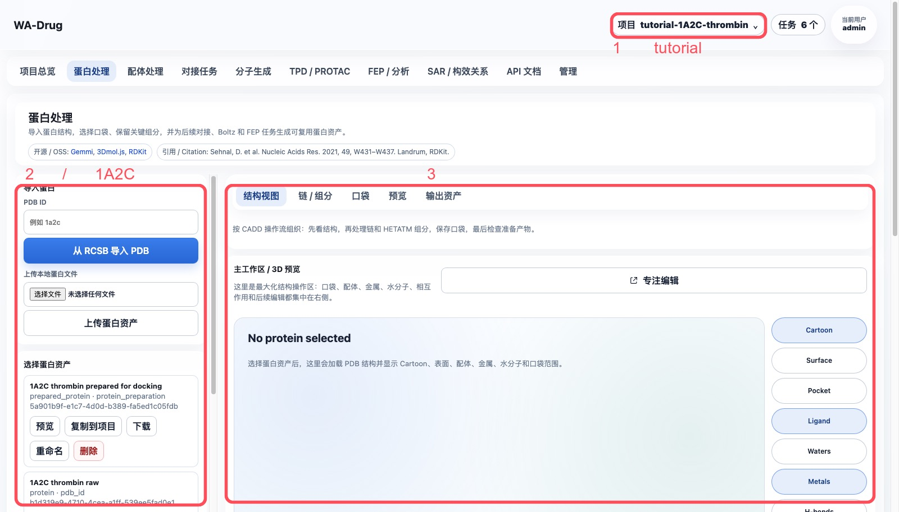
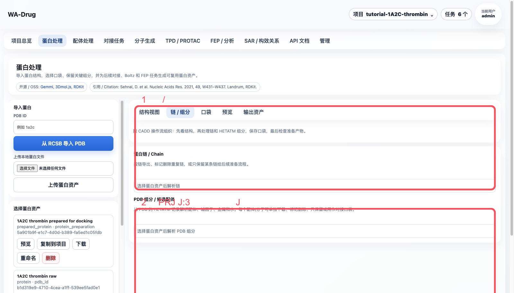
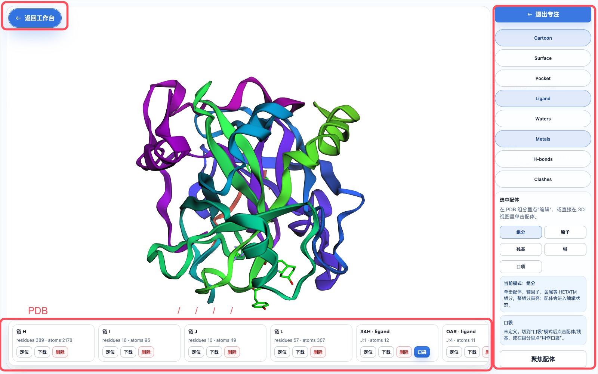
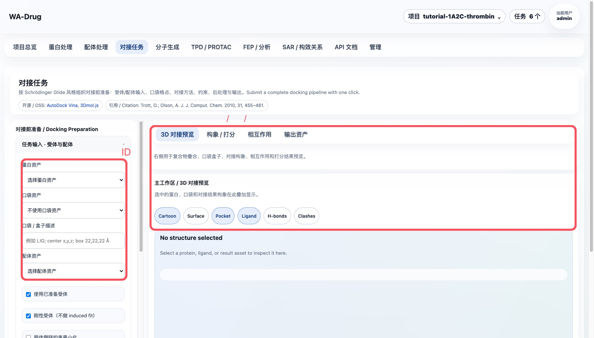
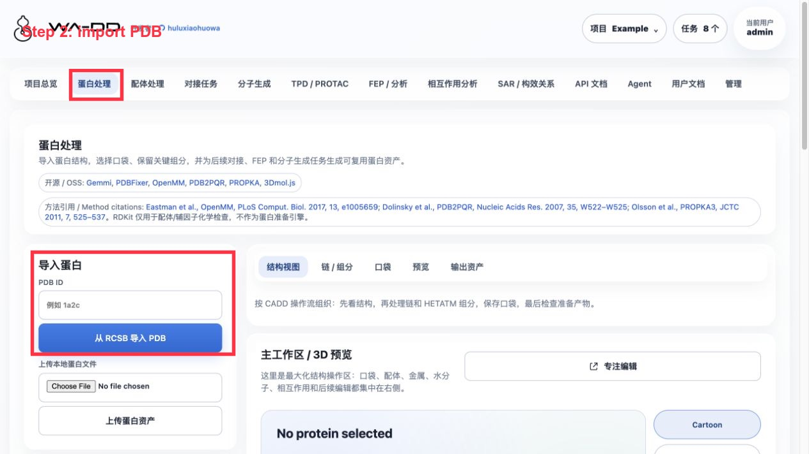
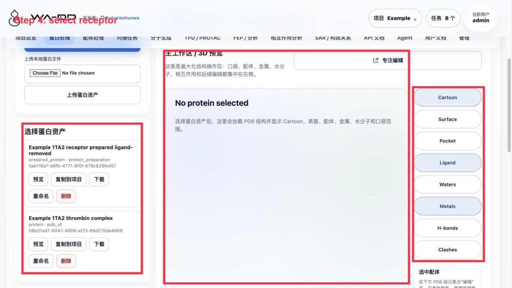
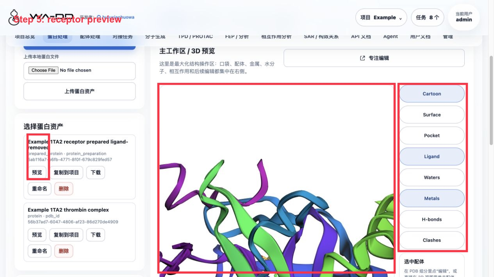
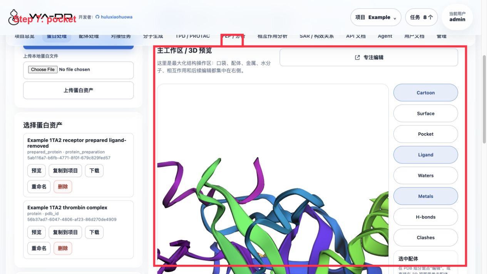

蛋白处理使用指南
本指南固定使用项目 tutorial-1A2C-thrombin，示例结构为 RCSB PDB 1A2C。目标是完成一次可复现的 CADD 蛋白准备流程：导入共晶结构、检查链和 HETATM 组分、选择参考配体、定义口袋、生成准备后蛋白资产，并把输出交给后续对接、FEP 和分子生成流程。
案例来源：RCSB PDB 1A2C，DOI: 10.2210/pdb1A2C/pdb。网页模块本身只展示开源代码和算法引用；教程案例来源只在本指南中说明。
本模块完成什么
- 导入 PDB ID 或本地 PDB/mmCIF 文件。
- 在 3D 视图中检查蛋白链、共晶配体、金属、水和其他 HETATM 组分。
- 从共晶配体或手动坐标定义 pocket asset。
- 删除不需要的链、配体、水或重复链。
- 生成
prepared_protein资产，供对接、FEP 和分子生成模块复用。
1. 打开固定 tutorial 项目
登录 admin / admin123456 后，在右上角项目菜单选择或创建：
tutorial-1A2C-thrombin
进入 蛋白处理 页面。左侧是导入和准备参数，右侧是 3D 主工作区。

2. 导入 1A2C 并选择蛋白资产
如果项目中还没有原始结构，在左侧 PDB ID 输入：
1a2c
点击 从 RCSB 导入 PDB。导入成功后，选择 1A2C thrombin raw，点击 预览。
推荐保留的资产命名：
| 阶段 | 建议名称 | 类型 |
|---|---|---|
| 原始结构 | 1A2C thrombin raw |
protein |
| 口袋 | PRJ J:3 active-site pocket |
pocket |
| 准备后受体 | 1A2C thrombin prepared for docking |
prepared_protein |
3. 检查链、配体和 HETATM 组分
在右侧主工作区点击 链 / 组分。本例中关键对象如下：
| 对象 | 含义 | 建议处理 |
|---|---|---|
链 H / L |
thrombin 受体链 | 保留 |
链 J |
Aeruginosin 298-A 抑制剂链 | 定义口袋后从受体删除 |
PRJ J:3 |
抑制剂中部片段 | 推荐作为 pocket 中心 |
34H J:1、OAR J:4 |
抑制剂两端片段 | 可辅助确认口袋范围，可提取到配体库 |
TYS I:363 |
hirudin 片段中的修饰残基 | 不作为本例小分子口袋中心 |
NA H:626 |
金属离子 | 默认保留 |
HOH/WAT |
结晶水 | 默认删除，关键水另行保留 |

4. 用 PRJ J:3 定义口袋
点击 弹出为专注编辑窗口，在底部横向 PDB 成分条找到 PRJ · ligand · J:3。
操作顺序：
- 点击
PRJ J:3卡片的定位，确认它位于活性口袋中。 - 点击
口袋或用作口袋。 - 打开右侧
Pocket显示。 - 将 box 设置为：
center = 18.54, -14.79, 20.56
box = 20, 20, 20 Å
如果要更保守覆盖整个 Aeruginosin 298-A 链，可改为 22, 22, 22 Å。调整中心和大小时应实时看到蓝色 box 覆盖共晶配体所在区域。

5. 准备受体
回到 蛋白处理 页面，在 CADD 蛋白前处理 中选择原始蛋白资产 1A2C thrombin raw。
推荐参数：
- 删除结晶水：开启。
- 保留金属离子：开启。
- 保留辅因子/共价配体：按任务需要开启；本例会删除原始抑制剂链
J。 - pH：
7.4。 - 删除链：
J；如果只研究 thrombin 小分子口袋，也可删除I。 - 参考配体/残基：
PRJ J:3。 - 输出名称：
1A2C thrombin prepared for docking。
点击 生成准备后蛋白资产。任务中心会出现 protein_preparation 任务，状态按步骤显示为进入队列、运行、完成或失败。
6. 输出如何进入后续步骤
完成后会得到两个核心资产：
prepared_protein:1A2C thrombin prepared for dockingpocket:PRJ J:3 active-site pocket
这些资产会在 对接任务 中以下拉列表按名称选择，不需要手填 ID。

7. 失败任务处理
如果任务失败：
- 打开右上角
任务。 - 点击失败任务的
查看进度，确认失败步骤和错误。 - 如果已经产生中间文件，点击
清理输出。 - 修正输入后重新提交；旧任务记录保留，方便追踪。
8. Server6 Example：1TA2 176 配体口袋
本例在 server6 的 Example 项目完成，靶点为 thrombin 复合物 1TA2，选择共晶小分子 176 A:401 作为参考配体和口袋中心。




操作步骤：
- 进入“蛋白处理”。
- 从 PDB 下载
1TA2，命名为Example 1TA2 thrombin complex。 - 在组分列表中定位
176 A:401。 - 将
176 A:401提取为参考配体资产：Example 1TA2 reference ligand 176。 - 以
176 A:401为中心提取口袋资产：Example 1TA2 176 binding pocket。 - 运行蛋白准备，输出名为
Example 1TA2 receptor prepared ligand-removed。
本例准备参数：
- 删除结晶水：开启。
- 保留金属：开启。
- 保留辅因子：关闭。
- 添加氢：开启。
- 修复缺失原子：开启。
- pH：7.4。
- 从受体中删除参考配体
176 A:401，避免后续对接时口袋被原始配体占据。
结果检查：
- 准备后蛋白资产应为
prepared_protein，并且不再包含176 A:401。 - 参考配体作为单独 ligand 资产保留，可在配体处理、相互作用分析或后续 FEP 设计中复用。
- 口袋资产保存了 center、box size 和 pocket PDB，后续对接和分子生成都复用这一个口袋定义。